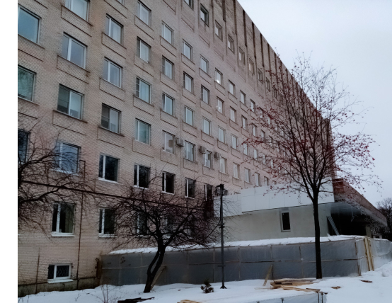

История городской больницы
Больничный корпус литер А, расположенный по адресу Крестовский проспект, дом 18, функционировал как лечебное учреждение с сентября 1941 года, когда в нём разместился Хирургический госпиталь ПВО, с 1944 года госпиталь был преобразован в больницу. В корпусе функционировало 210 коек терапевтического и дерматовенерологического профиля.
Хирургический корпус клиники, расположенный в здании литер Б, открыт в 1979 году. В разное время в нем располагались отделения урологии и неврологии, панкреатологический центр
и отделение гнойной хирургии. Нынешняя структура клинических подразделений Городской больницы № 9 окончательно сформировалась к началу 2000-х годов. К этому времени одно из хирургических отделений было полностью перепрофилировано в отделение колопроктологии, было открыто отделение онкопроктологии, и из расформированной больницы Софьи Перовской в клинику переехало единственное
в нашем городе отделение экстренной проктологии.

История развития Городской больницы № 9 неразрывно связана с кафедрой хирургических болезней стоматологического факультета
с курсом колопроктологии Первого Санкт-Петербургского медицинского института имени И.П.Павлова. Организатором, первым заведующим кафедрой хирургических болезней и бессменным ее руководителем на протяжении 24 лет был доктор медицинских наук, профессор Андрей Михайлович Ганичкин (1917-1992 гг.). До прихода в I ЛМИ имени академика И.П. Павлова Андрей Михайлович
на протяжении двух десятилетий работал в должности ректора Донецкого Государственного медицинского института им. А.М.Горького,
а затем директором Научно-исследовательского института онкологии имени профессора Н.Н. Петрова. Блестящий организатор, большой ученый и опытный педагог, профессор А.М. Ганичкин сумел в кратчайший срок создать дружный, сплоченный, работоспособный
и творческий коллектив единомышленников, который без преувеличения стал одним из основных столпов Санкт-Петербургской школы колоректальной хирургии.
В разное время преподавателями кафедры являлись такие
известные в Северной столице хирурги, как Л.В. Поташов,
А.М. Гранов, В.К. Кудряшов и многие другие. С 1992 года,
после смерти профессора А.М. Ганичкина, кафедру и клинику хирургических болезней стоматологического факультета с курсом колопроктологии ПСПбГМУ им. И.П.Павлова возглавил профессор, доктор медицинских наук Николай Антонович Яицкий. Являясь
долгие годы ближайшим учеником и другом А.М. Ганичкина, Николай Антонович сохранил основные научные направления кафедры — колопроктология и хирургия органов желудочно-кишечного тракта. С 2005 года по настоящее время коллектив кафедры возглавляет профессор Сергей Васильевич Васильев. Являясь главным колопроктологом Санкт-Петербурга, он успешно продолжил дело начатое его учителями А.М. Ганичкиным и Н.А. Яицким. С 2016 года по 2022 год Сергей Васильевич также занимал должность главного врача СПб ГБУЗ «Городская больница №9».